リケッチア症
日本紅斑熱とツツガムシ病
![]()
2026-09-26
Take-home messages
- 発熱・皮疹・刺し口（痂皮）を見たら、曝露地域・季節・野外活動を確認する。
- 刺し口は本人が気づいていないことが多い。全身を系統的に診察する。
- 疑えば検体を確保し、検査結果を待たず治療を開始する。
疑ったときの流れ
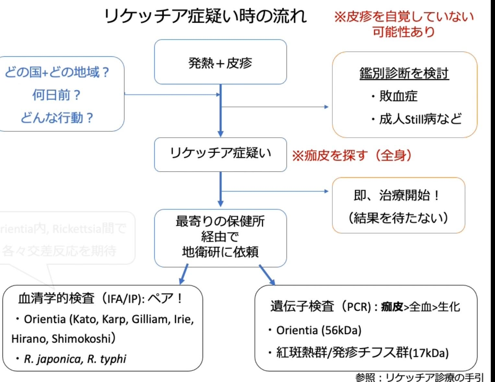
リケッチア症の位置づけ
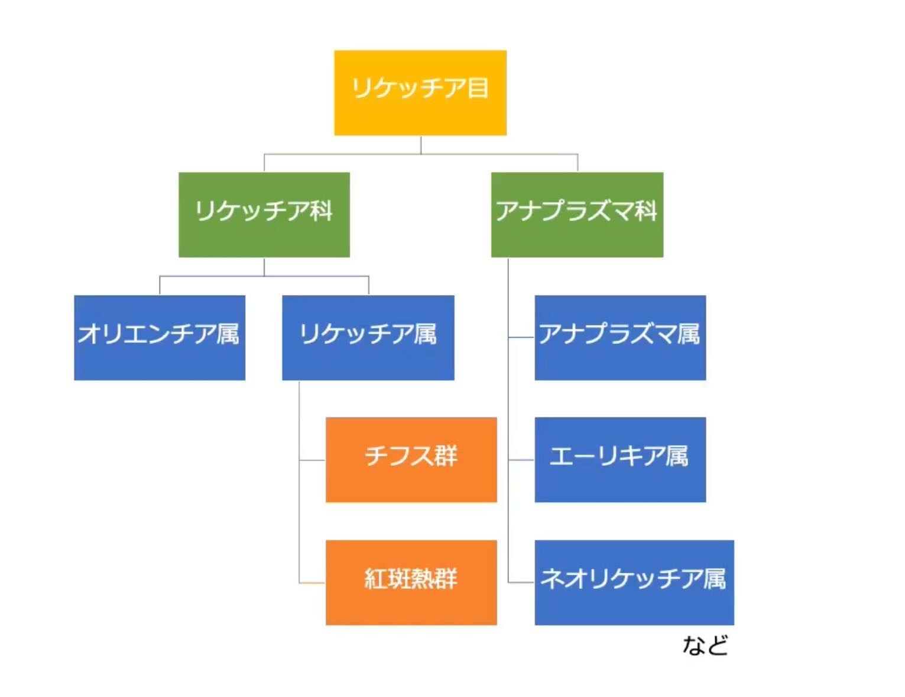
日本で重要な2疾患
- ツツガムシ病
Orientia tsutsugamushi - 日本紅斑熱
Rickettsia japonica
いずれも節足動物媒介性で、急性発熱・皮疹・刺し口を手掛かりに診断する。
まず比較する
| 日本紅斑熱 | ツツガムシ病 | |
|---|---|---|
| 病原体 | R. japonica | O. tsutsugamushi |
| ベクター | マダニ | ツツガムシ幼虫 |
| 潜伏期間の目安 | 2–10日 | 5–14日 |
| 季節性 | 主に春〜秋 | 地域により春・秋〜初冬 |
| 皮疹の傾向 | 四肢、手掌・足底、紫斑化 | 体幹優位の斑状〜斑丘疹 |
| 刺し口 | 比較的小さく周囲発赤 | 黒色痂皮が目立つことがある |
| リンパ節 | 目立たないことが多い | 腫大することがある |
傾向には個人差があり、単一所見だけでは区別できない。
疫学：届出数の推移
日本紅斑熱
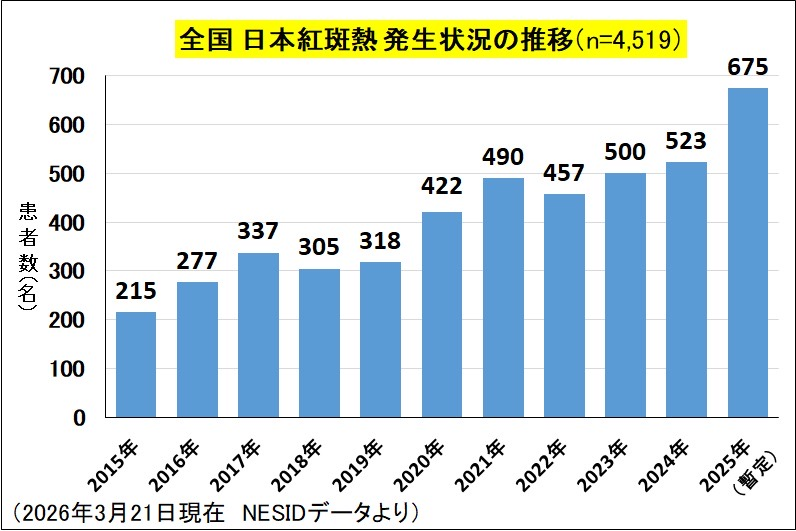
ツツガムシ病
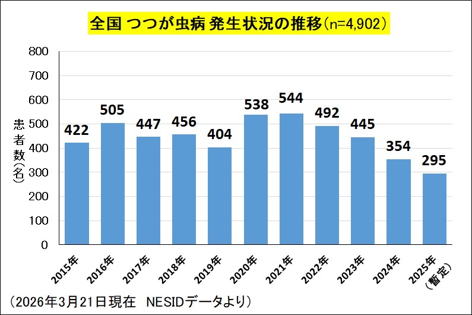
画像は元ノートに埋め込まれた集計図（2026年3月21日現在の暫定データと記載）。発表前に最新値を確認する。
地域と季節を聞く
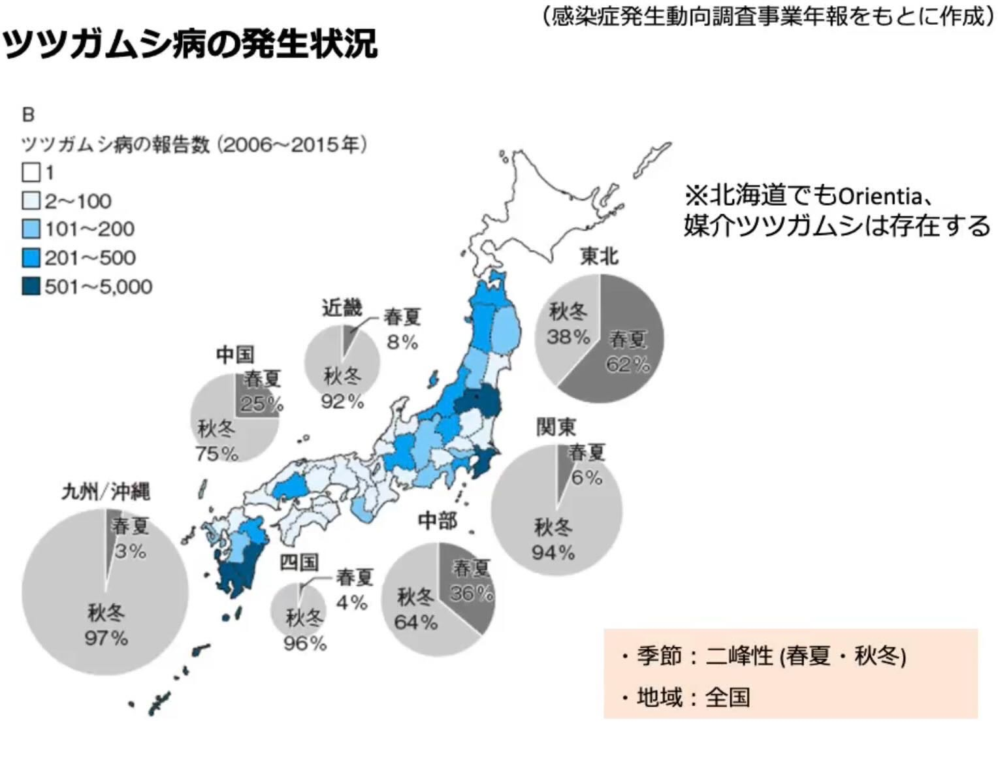
- 北海道以外からの報告が多い
- ツツガムシ病は全国でみられ、地域ごとに好発時期が異なる
- 春〜初夏：東北・北陸などで注意
- 秋〜初冬：関東〜九州を中心に注意
- 日本紅斑熱は主に春〜秋
病歴で聞くこと
居住地だけでなく、旅行先、農作業、草むら、山林、庭仕事まで確認する。
臨床像：三徴を軸に考える
三徴
- 発熱
- 皮疹
- 刺し口（痂皮）
共通する症状・所見
- 頭痛、倦怠感、筋痛
- 血小板減少
- 肝逸脱酵素上昇
- 低Na血症、炎症反応上昇
見逃しやすい理由
- 症状は非特異的
- 虫に刺された自覚がないことが多い
- 皮疹・刺し口を本人が認識していないことがある
- 刺し口が下着に隠れる柔らかい部位にあることが多い
診察者が探しにいく病気と捉える。
皮疹：典型像だけを期待しない
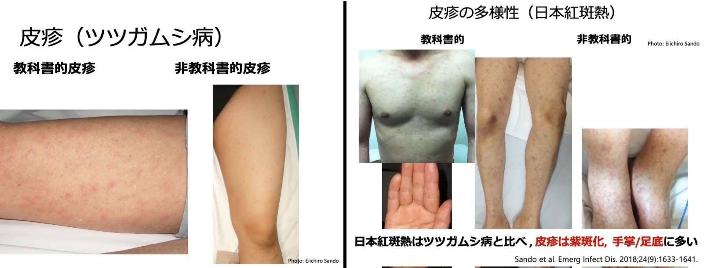
元画像の出典表記：Sando et al. Emerg Infect Dis. 2018;24(9):1633–1641。臨床写真を含む。
刺し口：全身を診る
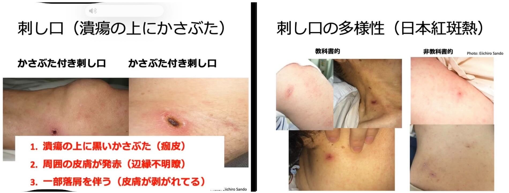
観察のポイント
- 潰瘍上の黒色痂皮
- 周囲の発赤
- 落屑を伴うことがある
- 腋窩、鼠径、頸部、乳房下、陰部なども確認
- 痛み・痒みが乏しく見逃されることがある
検体：治療前に確保、治療は遅らせない
依頼する検体
- 刺し口：痂皮、スワブまたは生検（検査室の手順に従う）
- 全血：PCR用
- 血清：急性期＋回復期のペア血清
一般検査
- 血小板減少
- AST/ALT、LDH上昇
- 低Na血症
- CRP上昇
- 腎機能障害は重症度の手掛かり
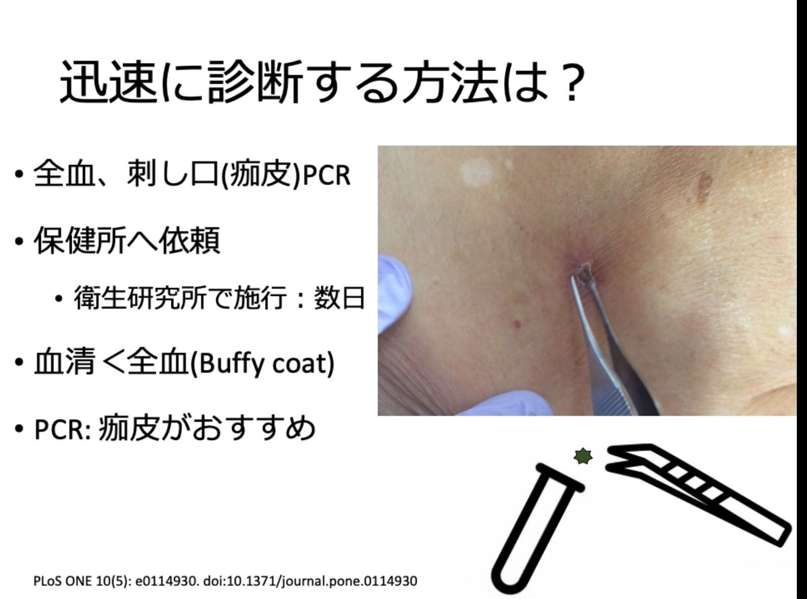
刺し口由来検体は早期診断に有用。採取方法と提出先は最寄りの保健所・地方衛生研究所へ確認する。
血清学的検査の読み方
- 急性期単回検体の陰性だけでは除外できない
- 急性期と回復期のペア血清で評価する
- 一般に4倍以上の抗体価上昇が診断の根拠になる
- 血清型間の交差反応に注意する
- 標準的な検査対象外の血清型では感度に限界がある
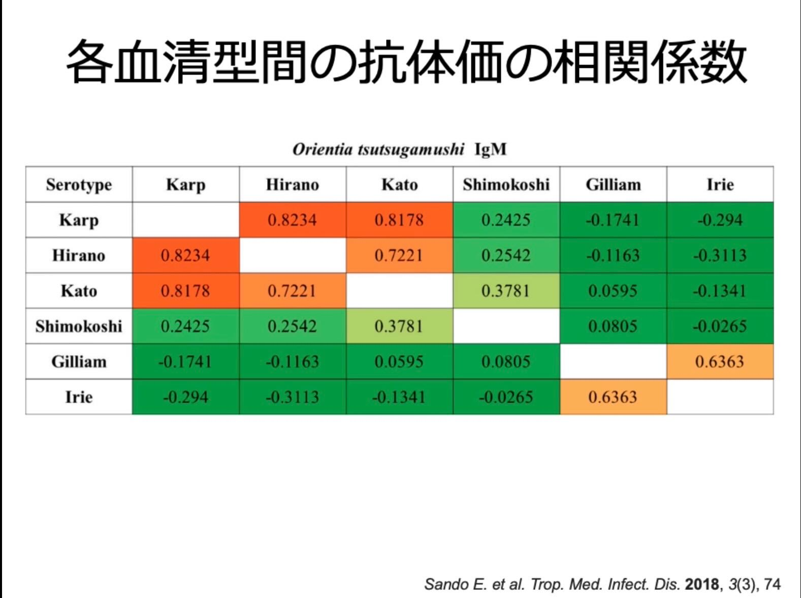
治療：疑った時点で開始
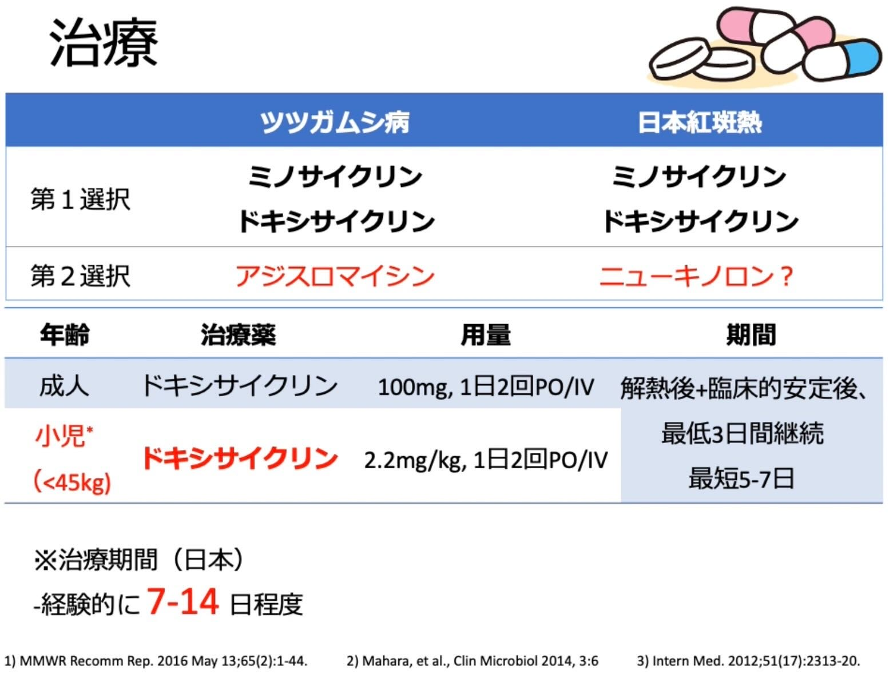
原則
検査結果を待って抗菌薬開始を遅らせない。
- ドキシサイクリンが中心
- 成人の代表例：100 mg、1日2回、経口または静注
- 解熱後かつ臨床的に安定してから少なくとも3日間継続し、総治療期間は患者背景・重症度・国内指針で調整
- 妊娠、小児、重症例、薬剤アレルギーでは専門家に相談
元ノート本文にあった「IM」は、埋め込み画像および公的資料に合わせて「IV」に修正した。
両疾患の違い：まとめ
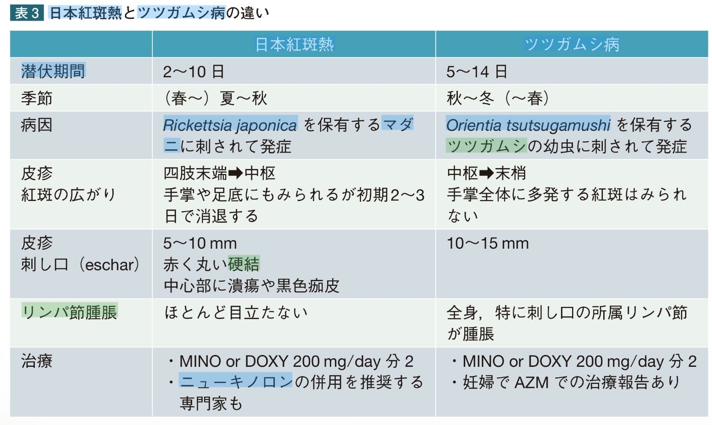
検査所見からの比較
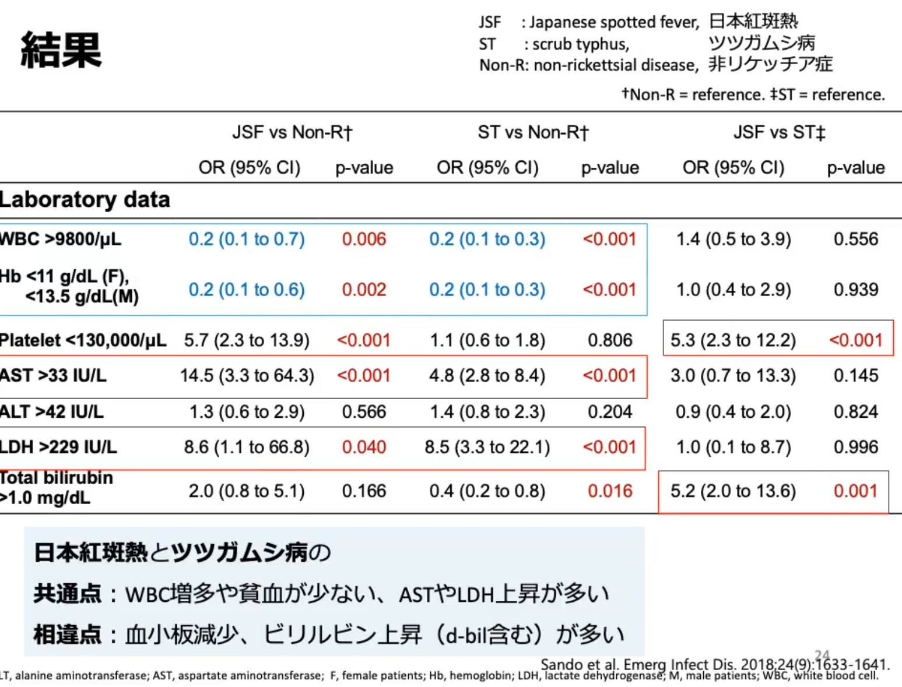
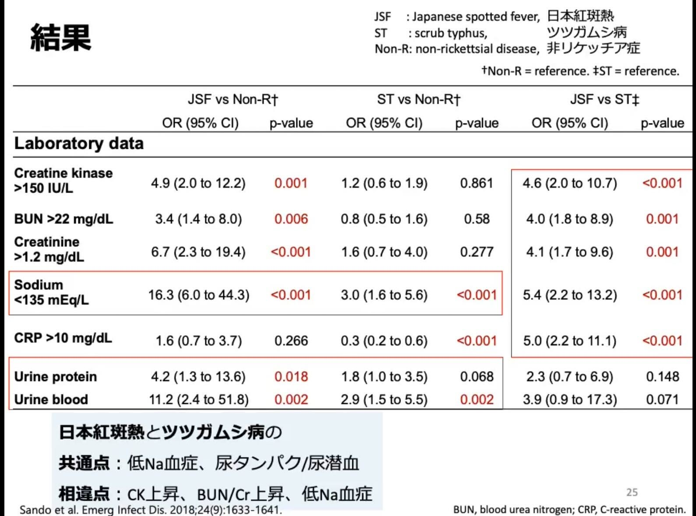
元画像の出典表記：Sando et al. Emerg Infect Dis. 2018;24(9):1633–1641。個々の所見は診断を確定するものではない。
予防
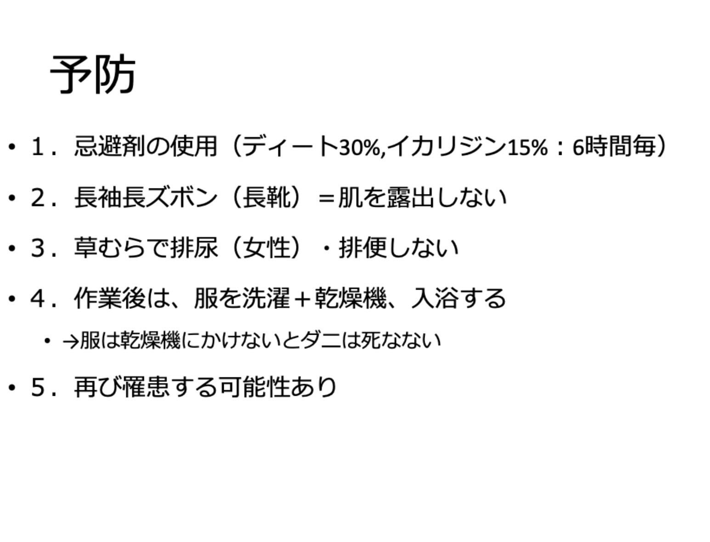
- 肌の露出を減らす
- 忌避剤を製品表示どおり使用する
- 草むらでの長時間の滞在や直接接触を避ける
- 帰宅後は衣類を処理し、入浴して全身を確認する
- 罹患後も再感染の可能性がある
参考資料
- CDC: Clinical Overview of Scrub Typhus
- CDC Yellow Book: Rickettsial Diseases
- Sando E, Suzuki M, Katoh S, et al. Distinguishing Japanese spotted fever and scrub typhus, central Japan, 2004–2015. Emerg Infect Dis. 2018;24(9):1633–1641. doi:10.3201/eid2409.171436
- 元ノート記載：国立感染症研究所／JIHS 日本紅斑熱資料
- 元ノート記載：国立感染症研究所／JIHS ツツガムシ病資料
編集メモ
OneNoteから本文201項目・画像27点を抽出し、表記を整え、スライド単位に再構成した。医学的内容は発表・診療で使う前に、最新の国内指針と施設の検査・治療手順で最終確認する。
Medicine · Statistics · Home